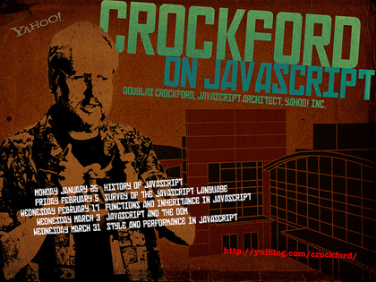

JavaScript basics
Today’s crash course will be most useful for proficient programmers who may have written some JavaScript in the past but are more familiar with classical languages like C++ or Java. If you happen to be a seasoned lambda haxor have no fear—our lessons will accelerate rapidly in subsequent weeks.
Required tools
All you need is a text editor and a good Web browser. I’m on a Mac so my text editor of choice is TextMate ($50). If you’re on a budget TextWrangler is a great free alternative. For Windows users, I’ve heard Notepad++ is good—and it’s free. If you’re on a *nix box I’m sure you already have a text editor that you’re rather attached to. As for browsers, any of these will do nicely: Chrome, Safari, Opera, and Firefox.
Hello, Console
The browsers above come with interactive JavaScript consoles—a very powerful thing. Open your console right now. Here are Macintosh-specific instructions that Windows and *nix users can extrapolate from:
Chrome: View → Developer → JavaScript Console, or ⌥⌘J.
Safari: First, enable the Developer menu.
Then, Develop → Show Error Console, or ⌥⌘C.
Opera: View → Developer Tools → Opera Dragonfly, or ⌥⌘I, then click on the Console tab.
Firefox: Tools → Web Developer → Web Console, or ⌥⌘K.
Type the following into your console and hit ↩:
1 + 2
Your console will respond with:
3
Every browser window is now your very own calculator. Follow along with the examples below by copying and pasting the sample code snippets into your console.
Each time you hit ↩ the console will respond to your input. This is great. Unless you need to type out a multiline command. In that case when you reach the end of a line hit ⇧↩ (instead of just ↩) to insert a line break without submitting to the console. (In Opera ⇧↩ will begin a “multiline mode” without inserting a new line. Once in Opera’s multiline mode hitting ↩ will not trigger a submission. To exit Opera’s multiline mode hit ⌘↩.)
Numbers, Strings, and Booleans
Declaring a variable in JavaScript is easy:
var hello
Notice what we’re not doing: There’s no need to specify what type of value this variable will hold. In other languages you might have to decide ahead of time if a variable will hold numbers, or hold text, or hold some other type of data entirely. In JavaScript you just declare a variable, then start assigning values to it.
var hello
undefined
hello = 7
7
hello * 2
14
Ok, from here on I’ll leave out the
var hello line
because it’s quite repetitive and I think you get the idea:
declare a variable first, then assign it a value.
If you’re a fan of brevity you can do it in one go like this:
var hello = 7.
Any variable can hold any type of data. And you can change that type of data on a whim. This is called dynamic typing:
hello = 7
7
hello = 1.2
1.2
hello = 'seven'
"seven"
hello = true
true
It’s easy to ask JavaScript what type of data any variable is holding.
Here we take apart the blurb above, inspecting hello
each time we assign it a new type of value.
hello = 7
7
typeof hello
"number"
hello = 1.2
1.2
typeof hello
"number"
hello = 'seven'
"seven"
typeof hello
"string"
hello = true
true
typeof hello
"boolean"
Functions
In JavaScript, functions can be stored in variables. This is rather strange if you’re coming from a C-based language. (If you’re typing this example into the console by hand don’t forget that ⇧↩ allows you to insert a line break without submitting.)
hello = function(){
return 'Hello, World!'
}
Wait. Did we really just store a function in hello?
typeof hello
"function"
And what was the content of that hello variable again?
hello
function(){
return 'Hello, World!'
}
Passing arguments to functions is a breeze. Because variables are dynamically typed we don’t have to create multiple functions to achieve polymorphism. For example, this function could accept two strings—as it appears intended for—or some random combination of strings, numbers, booleans, and so on.
hello = function( greeting, name ){
return greeting + ', '+ name +'!'
}
Now, what do you suppose this will do?
hello( 'Hey there', 73 )
Or even this:
hello( hello, hello( true, true ))
Next week we’ll investigate JavaScript’s function-scope (rather than block-scope) and the magic of closures. (For example, did you know JavaScript can have private variables?) There’s a lot to look forward to.
Objects
In classical languages like C++ or Java creating an object requires first writing a class, then creating an “instance” of that class. In JavaScript it’s dead simple to create an object:
hello = {}
That’s it. That’s the power of JavaScript’s object-literal syntax. Now you’ve got an empty object named “hello” at your disposal.
hello
► Object
typeof hello
"object"
But empty objects aren’t much fun, so let’s create an object with a property called “luckyNumber.”
hello = {
luckyNumber: 7
}
Now we can query the object.
hello.luckyNumber
7
If you’ve ever used the JSON format to pass data from one place to another these structures should feel familiar to you. After all, JSON stands for JavaScript Object Notation. You can store any data type inside an object, including functions and even more objects.
hello = {
luckyNumber: 7,
luckyString: 'seven',
luckyObject: {
anotherLuckyNumber: 3
},
luckyFunction: function( name ){
return 'Hello, '+ name + '!'
}
}
And then you can query those as well:
hello.luckyString
"seven"
hello.luckyObject.anotherLuckyNumber
3
hello.luckyFunction
function( name ){
return 'Hello, '+ name + '!'
}
hello.luckyFunction( 'World' )
"Hello, World!"
You can also add properties after the object has been created. Suppose we’d already created the object example above. We could then do the following:
hello.someNewProperty
undefined
hello.someNewProperty = 1 + 2
3
hello.someNewProperty
3
And of course the object can modify its own values.
hello = {
times: 0,
again: function(){
this.times = this.times + 1
return 'Hello for the '+ this.times + 'x time!'
}
}
► Object
hello.again()
"Hello for the 1x time!"
hello.again()
"Hello for the 2x time!"
hello.again()
"Hello for the 3x time!"
Next week we’ll investigate the “this” keyword in depth as we discuss classical inheritance (traditional object-oriented inheritance involving classes) versus JavaScript’s prototypal inheritance.
Arrays
Creating a new array is just as easy as creating a new object:
hello = []
But here’s something unexpected:
typeof hello
"object"
What? Why did the console say this array was an object?
It behaves like an array and even has the usual array properties like length:
hello[ 0 ] = 'apple'
"apple"
hello[ 1 ] = 'orange'
"orange"
hello[ 2 ] = 'pear'
"pear"
hello.length
3
hello
["apple", "orange", "pear"]
Notice that beautiful array-literal notation coming back from the console—very useful. The reason the console thinks this is an object rather than an array is partly because JavaScript arrays aren’t really arrays at all, but hash tables disguised as arrays. (This is also why there’s no need to initialize an array with its intended size.) In a true array the index must be an integer because the index translates to consecutive memory address. In JavaScript this isn’t the case so the index can be any data type:
hello = []
[]
hello[ 6 ] = 'apple'
"apple"
hello[ 'orange' ] = 'Yes, strings work too.'
"Yes, strings work too."
hello[ function(){} ] = 'Oddly, you can use functions as well.'
"Oddly, you can use functions as well."
The length of an array is always one higher than its highest numerical index. This is a curveball for many seasoned programmers new to JavaScript.
hello = []
[]
hello.length
0
hello[ 0 ] = 'apple'
"apple"
hello.length
1
hello[ 1337 ] = 'Woa.. We just skipped quite a few indexes there!'
"Woa.. We just skipped quite a few indexes there!"
hello.length
1138
One last note, arrays really are just objects with some fancy “array-ness” sprinkled on
top—properties like length and methods such as push(), pop(), and so on.
In fact, objects and arrays are so similar that you can actually switch between
object-notation (object.key)
and array-notation (array['key']) when appropriate.
Here’s an array using both notations.
Note that you cannot use a number with object-notation
because raw names must begin with a letter, underscore, or dollar sign.
hello = []
[]
hello[ 'apple' ] = 'Hello, Apple!'
"Hello, Apple!"
hello.apple
"Hello, Apple!"
hello[ 7 ] = 'Hello, Seven!'
"Hello, Seven!"
hello[ '7' ]
"Hello, Seven!"
hello.7
SyntaxError: Unexpected number
And here’s an object using both notations. Note that some strings just can’t be used with object-notation.
hello = {}
► Object
hello.avocado = 'Goes well with anything.'
"Goes well with anything."
hello[ 'avocado' ]
"Goes well with anything."
hello[ 'chips and salsa' ] = 'Good any time.'
"Good any time."
hello.chips and salsa
SyntaxError: Unexpected identifier
hello.'chips and salsa'
SyntaxError: Unexpected string
Type coercion
JavaScript is a friendly language that wants everyone (including different data types) to get along.
This can be a source of confusion when testing for equalities.
For example, JavaScript will tell you that the number 7
is entirely equal to the string representation of the number seven:
7 == '7'
true
But how could they be equal when they’re not even the same data type? JavaScript is internally casting the number as a string when it does the comparison. If you want to truly test the number seven against its string representation you must use the triple-equals operator:
7 === '7'
false
The same concept is true for not-equals.
7 != '7'
false
7 !== '7'
true
It’s worth noting that zero, an empty string, and an empty array are all equal to false when using the regular double-equals operator.
0 == false
true
'' == false
true
[] == false
true
But they have a distinct meaning separate from false when using the triple-equals operator.
0 === false
false
'' === false
false
[] === false
false
JavaScript’s addition operator is rather overloaded.
7 + 7
14
Well, that made sense. Seven plus seven is indeed fourteen.
'Java' + 'Script'
"JavaScript"
And that also made sense, two strings can be added (or more appropriately, concatenated) together. But what about a number plus a string?
7 + 'Script'
"7Script"
JavaScript cast the number 7 as a string, then concatenated it with the string 'Script'.
We can go one step further: When used as prefix the addition operator will attempt to cast a string as a number.
7 + +'7'
14
If you attempt to do some actual math on something that’s not a number you’ll receive the value Not a Number.
7 * 'Script'
NaN
Wat?
This brings us to Wat (by Gary Bernhardt), a video that humorously demonstrates type coercion in action. The first minute happens to be about the Ruby language, but the remaining three minutes are purely JavaScript.
As a bonus wat, JavaScript uses the IEEE standard for floating point numbers, causing many JavaScript newcomers to anxiously ask is JavaScript’s Math broken? I assure you it’s not broken, but it does look that way, doesn’t it?
1 + 2
3
0.1 + 0.2
0.30000000000000004

Douglas Crockford on JavaScript
Part of your homework this week is to watch Douglas Crockford’s lecture
“Chapter 2: And then there was JavaScript.”
I’d like to show you two choice cuts to help you get started:
00:00–11:04 — JavaScript’s origins
24:07–28:03 — Classes vs Prototypes
If you’re interested in where the language itself is headed see Brendan Eich, inventor of JavaScript, discuss JavaScript at 17. Eich is a genius. It is most unfortunate then that some of his personal views are less than enlightened.